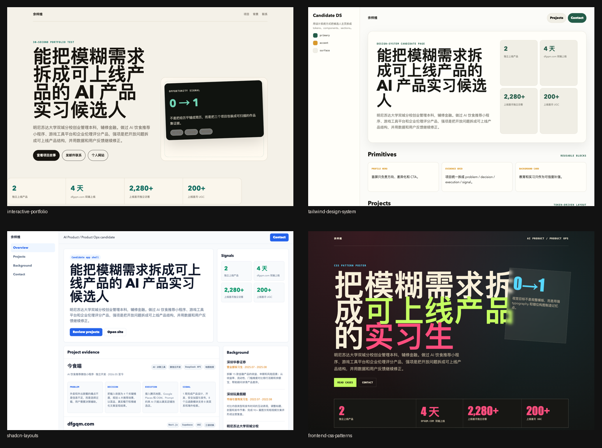
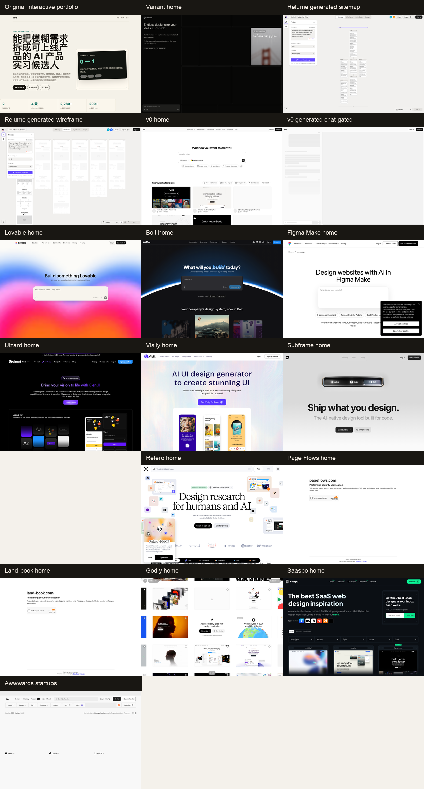
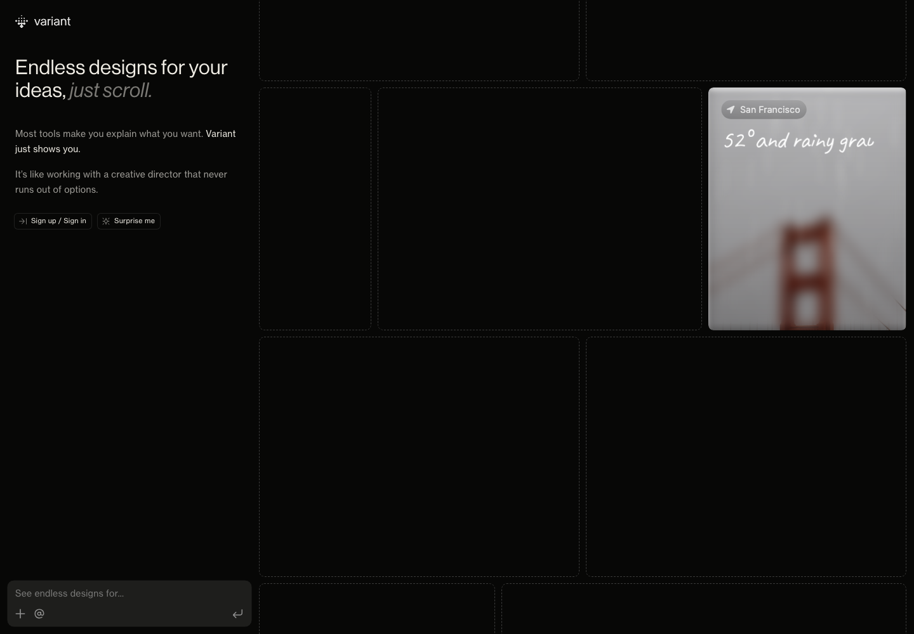
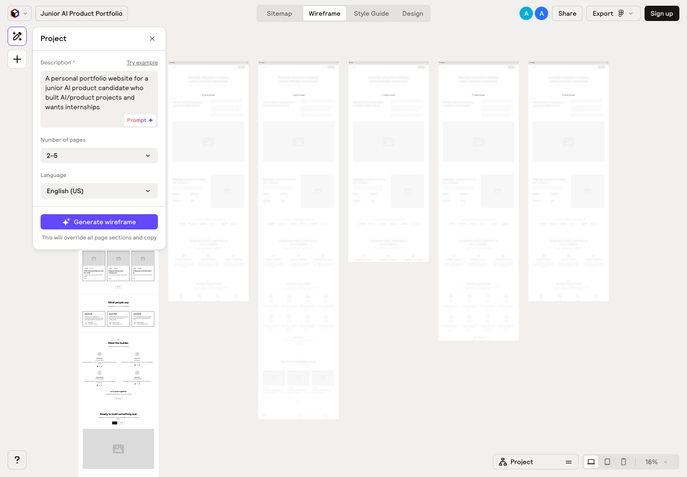
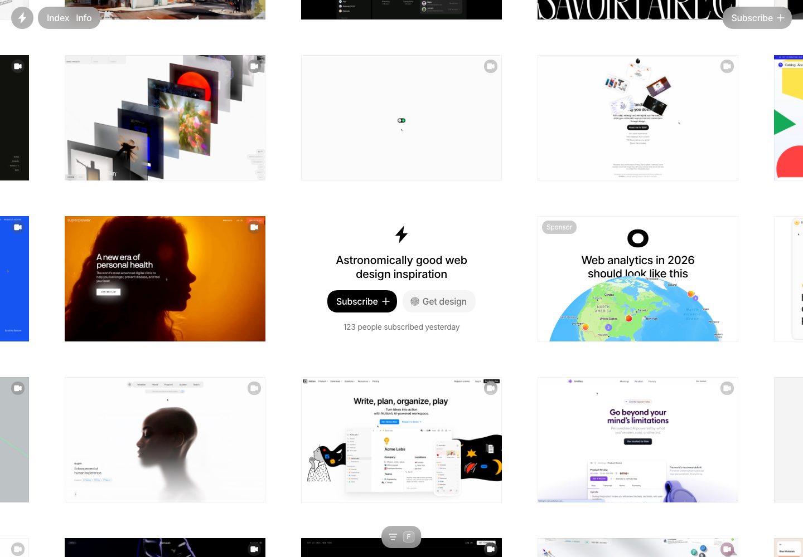
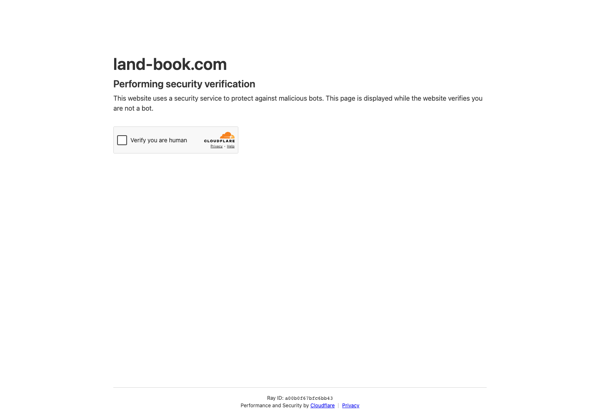

interactive-portfolio
作品集不是简历网页化，而是机会转化。项目证明优先，核心是 30 秒测试。
Skill 给原则，外部站点给参考，Codex 负责重开发。不要让模型凭空“做好看”，要让它先找类似站点、抽象设计语言、再按设计系统实现。
核心判断：Codex 不是不能做前端。Codex 不能在没有方向、没有参考、没有设计系统、没有截图验收的情况下稳定做好前端。
| 层级 | 问题 | 工具/Skill | 验收 |
|---|---|---|---|
| 叙事层 | 页面到底表达什么 | interactive-portfolio | 30 秒内知道是谁、做什么、最强证明、如何联系 |
| 信息架构 | 有哪些模块，顺序是什么 | Relume、design-consultation | 模块支持用户决策，不堆字段 |
| 视觉方向 | 看起来像哪类产品 | Variant、Godly、Land-book、design-shotgun | 有明确视觉立场，不像通用模板 |
| 设计系统 | 如何复用 | tailwind-design-system | token 和组件统一 |
| 布局工程 | 页面是否稳定 | shadcn-layouts | 桌面/移动端不崩，滚动正确 |
| 发布审查 | 是否可信、不过界 | claude-page-review、Playwright | 不编造，不泄露，截图通过 |

作品集不是简历网页化，而是机会转化。项目证明优先，核心是 30 秒测试。
先决定视觉立场，再写代码。字体、颜色、空间、动效服务同一个概念。
用硬约束抵消 AI UI 偏差：紫蓝渐变、三列卡片、默认字体、卡片滥用。
早期先扩大搜索空间，生成真正不同的方向，再收敛。
把审美变成 token 和组件契约，让模板可复用。
解决高度链、滚动容器、min-h-0、grid 父子关系这些真实布局问题。

Variant 适合视觉探索，Relume 适合 sitemap/wireframe，v0/Lovable/Bolt 适合登录后做代码或应用原型。它们不是生产依赖。
Godly、Land-book、Saaspo、Awwwards、Mobbin、Page Flows、Refero 更稳定，适合给 Codex 提供真实世界参考。





候选人个人网站、SaaS landing page、报告页、dashboard、编辑器，不同页面不能套一个方法。
视觉方向用 Variant/Godly/Land-book/Awwwards，真实产品流程用 Mobbin/Page Flows/Refero。
保存桌面首屏、关键 section、移动端首屏。没有截图，就没有设计参考。
抽象信息顺序、字体气质、色彩关系、留白密度、CTA 层级、移动端折叠方式。
把参考站点共性变成新页面规则，不说“照抄某站”，而说布局、层级、token、组件和禁用项。
按 brief、设计 token、组件规则写代码，并只改真实源码入口。
截图检查桌面和移动端：文本、CTA、图片、滚动、横向溢出、动效性能。
检查文案、可信度、隐私、夸大、品牌一致性。
先不要写代码。先搜索/打开 5 个高质量同类站点作为参考，保存截图，并分析：
1. 首屏信息结构
2. 导航和 CTA
3. 字体气质
4. 色彩系统
5. section 顺序
6. 卡片/列表/图像使用方式
7. 移动端布局
8. 哪些设计可以抽象，哪些不能复制
最后输出新的设计 brief，再基于 brief 重新设计，不要直接抄任何站点。只抽事实，不生成设计。
用 interactive-portfolio 排序候选人证明。
按产品/运营、研发/算法、金融/咨询、设计/内容、创业型候选人分模板。
每个模板家族绑定 3-5 个参考截图和设计 brief。
token、组件、移动端规则固化。
截图 QA、隐私检查、反幻觉检查。
| 阶段 | 检查项 |
|---|---|
| 设计前 | 页面类型、用户、首屏目标、参考截图、不可复制边界是否明确。 |
| 设计中 | 是否先叙事再视觉，是否避免 AI 风，是否有 token 和移动端规则。 |
| 发布前 | 是否截图检查，是否无横向滚动，是否没有假指标/假推荐语/隐私泄露。 |
这里放执行时最有价值、但不适合塞进正文的内容。后续让 Codex 做前端时，可以直接复制这些矩阵、模板和检查表。
Codex Skill 通常就是一个包含 SKILL.md 的目录。外部用户安装前，可以先看 OpenAI Codex Skills 文档 和 OpenAI Skills Catalog。
本仓库还提供一组脱敏后的公开参考文件：docs/skill-reference/。这些文件不是本机 Skill 原文，而是可公开复用的行为说明、输入输出、工作流和验收标准。
| Skill | 公开来源/下载地址 | 推荐安装路径 | 说明 |
|---|---|---|---|
interactive-portfolio | VibeShip Spawner Skills | ~/.agents/skills/interactive-portfolio/ | 适合简历站/作品集叙事 |
design-shotgun | gstack design-shotgun | ~/.agents/skills/gstack/design-shotgun/ | 多方向视觉探索 |
design-consultation | gstack design-consultation | ~/.agents/skills/gstack/design-consultation/ | 设计系统和品牌方向 |
frontend-design | 未确认公开仓库；可按下方行为说明复现 | ~/.agents/skills/frontend-design/ | 高质量前端页面生成 |
design-taste-frontend | 未确认公开仓库；可按下方行为说明复现 | ~/.agents/skills/design-taste-frontend/ | 反 AI 味和审美校准 |
frontend-css-patterns | 未确认公开仓库；可按下方行为说明复现 | ~/.agents/skills/frontend-css-patterns/ | CSS 视觉模式 |
tailwind-design-system | 未确认公开仓库；可按下方行为说明复现 | ~/.agents/skills/tailwind-design-system/ | token 和组件系统 |
shadcn-layouts | 未确认公开仓库；可按下方行为说明复现 | ~/.agents/skills/shadcn-layouts/ | shadcn/Tailwind 布局稳定性 |
landing-page-design | inference.sh skills install | ~/.agents/skills/landing-page-design/ | Skill 内部标注依赖 inference.sh CLI |
claude-page-review | 未确认公开仓库；可按下方行为说明复现 | ~/.codex/skills/claude-page-review/ | Claude 二次页面审查 |
对应的公开参考文件：interactive-portfolio、frontend-design、design-taste-frontend、design-shotgun、design-consultation、tailwind-design-system、shadcn-layouts、frontend-css-patterns、landing-page-design、claude-page-review。
没有公开源码的 Skill 不应该只写“本地可用”。读者至少需要知道它解决什么问题、接收什么输入、会产出什么结果。下面是这次实验用到的行为摘要；即使没有这些 Skill 的源码，也可以把对应描述复制给 Codex，让它按同样流程执行。
| Skill | 解决的问题 | 典型输入 | 典型产出 |
|---|---|---|---|
interactive-portfolio | 把简历从经历顺序改成机会转化页，确保 30 秒内看懂是谁、做什么、最强证明和联系方式。 | 简历、目标岗位、作品链接、隐私边界。 | 候选人定位、首屏叙事、项目证据排序、联系 CTA。 |
frontend-design | 逼模型先选明确视觉方向，再实现有记忆点的页面，避免通用模板感。 | 页面目标、受众、品牌气质、技术栈、参考图。 | 独特视觉方向、字体/色彩/空间策略、可运行前端代码。 |
design-taste-frontend | 用规则反向校准 LLM 常见偏差，如紫蓝渐变、三列卡片、默认字体、静态成功态。 | 已有页面或待实现页面、期望密度、动效强度、技术约束。 | 审美修正清单、组件/布局规则、响应式和交互状态要求。 |
design-shotgun | 在视觉方向不确定时一次生成多套差异明显的方案，先选方向再深化。 | 产品/页面 brief、目标用户、可接受和不可接受的风格。 | 3-5 个视觉方向、对比板、反馈问题、下一轮收敛建议。 |
design-consultation | 为新项目建立设计系统源头，而不是边写边散落颜色和组件规则。 | 产品定位、竞品、品牌关键词、页面类型、已有约束。 | DESIGN.md、字体/颜色/间距/动效系统、预览页面。 |
tailwind-design-system | 把视觉方向落成 Tailwind/shadcn 可复用 token 和组件 primitive。 | 设计方向、Tailwind 版本、shadcn 使用范围、主题需求。 | CSS 变量、Tailwind theme、封装后的 Button/Card/Input 等基础组件。 |
shadcn-layouts | 修正 app shell、flex/grid、高度链和滚动容器问题，让布局稳定。 | shadcn/Tailwind 页面、滚动问题、全屏布局或 dashboard 结构。 | 高度链规则、min-h-0/min-w-0 修复、稳定的 shell/grid 布局。 |
frontend-css-patterns | 提供框架无关的 CSS 写法，覆盖字体、色彩、动效、背景纹理和空间组合。 | 设计 token、页面气质、CSS 或 Tailwind 约束。 | CSS custom properties、排版尺度、色彩主题、动画和视觉细节模式。 |
landing-page-design | 优化 landing page 的首屏、CTA、信任证据和转化路径。 | 产品价值、目标用户、转化目标、社会证明、hero image 需求。 | 5 秒首屏公式、标题/副标题、CTA、社会证明和 section 顺序。 |
claude-page-review | 发布前用第二模型审查用户可见页面，重点看文案、层级、真实性和隐私。 | 页面链接或源码、业务目标、不能暴露的信息、允许修改范围。 | 页面问题清单、改稿 brief、二次审查建议、发布前检查结果。 |
# 复制某个 Skill 到对方 Codex 技能目录
mkdir -p ~/.codex/skills
cp -R /path/to/skill-folder ~/.codex/skills/<skill-name>
# 或者复制到通用 agent 技能目录
mkdir -p ~/.agents/skills
cp -R /path/to/skill-folder ~/.agents/skills/<skill-name>| 名称 | 地址 | 类型 | 本文里的用途 |
|---|---|---|---|
| Variant | variant.com | AI 视觉探索 | 找页面气质和视觉方向 |
| Figma Make | figma.com/make | AI 设计工具 | 在 Figma 生态内生成/调整页面 |
| v0 | v0.app | AI app/code generator | 登录后生成组件或应用原型 |
| Lovable | lovable.dev | AI app builder | 快速生成应用原型 |
| Bolt | bolt.new | AI app builder | 快速生成前端项目 |
| Relume | relume.io | sitemap/wireframe | 信息架构、页面结构、线框 |
| Uizard | uizard.io | AI UI generator | UI mockup / wireframe |
| Visily | visily.ai | AI UI generator | UI mockup / screenshot to design |
| Subframe | subframe.com | code-first UI design | 设计系统和后台 UI |
| Godly | godly.website | 高审美网站灵感 | 强视觉、反模板、作品集/AI 产品参考 |
| Land-book | land-book.com | landing page 灵感 | 首屏、section、品牌页 |
| Saaspo | saaspo.com | SaaS 网站参考 | 产品页、功能页、报告页 |
| Awwwards | awwwards.com | 创意网站奖项 | 高冲击、实验性视觉方向 |
| Mobbin | mobbin.com | 真实产品 UI 截图 | 登录、上传、编辑、分享、dashboard |
| Page Flows | pageflows.com | 用户流程参考 | onboarding、checkout、upload、search |
| Refero | refero.design | Web/iOS UI 参考 | 页面模式和组件细节 |
| 页面目标 | 第一优先 Skill | 搭配 Skill | 关键产出 |
|---|---|---|---|
| 简历生成个人网站 | interactive-portfolio | tailwind-design-system、claude-page-review | 候选人定位、项目证明排序、CTA、隐私处理 |
| 获客 landing page | landing-page-design | frontend-design、design-review | 首屏价值、信任证据、转化路径 |
| 找视觉方向 | design-shotgun | design-taste-frontend | 3-5 个差异明显的方向，不在坏方向上微调 |
| 沉淀模板系统 | design-consultation | tailwind-design-system、shadcn-layouts | 模板家族、token、组件规则、响应式规则 |
| 发布前把关 | claude-page-review | Playwright | 首屏清晰度、真实性、隐私、移动端截图 |
| 类型 | 站点 | 适合借鉴 | 不要做什么 |
|---|---|---|---|
| AI 视觉探索 | Variant | 页面气质、首屏风格、组件组合方向 | 不要直接当生产代码来源 |
| 信息架构 | Relume | sitemap、wireframe、section 顺序 | 不要相信生成的人名、公司、指标 |
| 代码生成 | v0、Lovable、Bolt | 登录后快速生成 app 原型或组件 | 不要跳过源码审查和响应式 QA |
| 高审美灵感 | Godly、Awwwards | 视觉语言、动效、排版张力 | 不要复制独特品牌资产 |
| Landing 参考 | Land-book、Saaspo | 首屏、CTA、section、SaaS 叙事 | 不要把个人主页做成硬销售页 |
| 真实产品流程 | Mobbin、Page Flows、Refero | 上传、登录、编辑、分享、dashboard 流程 | 不要只看单屏，忽略完整用户路径 |
| 参考站点 | 截图路径 | 可抽象原则 | 不能复制 | 改造动作 |
|---|---|---|---|---|
| 站点 A | assets/ref-a-hero.png | 左对齐 hero、强标题、低饱和强调色 | logo、品牌图、专属插画 | 用相同信息层级，不复刻资产 |
| 站点 B | assets/ref-b-mobile.png | 移动端 CTA 全宽，首屏露出下一节 | 具体文案、客户 logo | 改移动端结构和 CTA 位置 |
| 站点 C | assets/ref-c-section.png | 项目用 case study，不用三列 feature card | 项目图片和数据 | 把简历项目重写为问题-动作-结果 |
页面类型：
目标用户：
页面主目标：
首屏必须回答：
-
-
-
参考来源：
- 参考 1：截图路径 / 可抽象原则
- 参考 2：截图路径 / 可抽象原则
- 参考 3：截图路径 / 可抽象原则
信息架构：
1. Hero：
2. Proof：
3. Case studies：
4. Background：
5. CTA：
视觉语言：
- 字体：
- 主色：
- 强调色：
- 背景：
- 图片/截图：
- 动效：
组件规则：
- Button：
- Card：
- Tag：
- Timeline：
- Mobile：
禁止项：
- 不编造数据、客户、推荐语、学校、公司和奖项。
- 不使用紫蓝渐变、默认三列卡片、过度圆角、过强阴影。
- 不复制参考站点的 logo、插画、摄影、专属文案。| 常见问题 | 判断方式 | 修正动作 |
|---|---|---|
| 紫蓝渐变和发光背景 | 页面第一眼像通用 AI SaaS 模板 | 换成品牌色、真实图片、纸面/编辑/产品系统语言 |
| 三列卡片堆满页面 | 每个 section 都是 3 cards | 改为 case study、列表、时间线、对比表、截图说明 |
| 文案空泛 | “提升效率”“打造体验”“赋能未来”太多 | 换成具体对象、动作、证据、结果 |
| 页面没有真实资产 | 只有色块、图标、抽象背景 | 加入产品截图、作品截图、报告图、真实站点参考图 |
| 移动端只是缩小 | 表格溢出、按钮挤压、hero 太高 | 单列重排、CTA 全宽、长表横滚或拆卡片 |
| 候选人类型 | 推荐结构 | 视觉方向 | 风险 |
|---|---|---|---|
| 产品/运营 | 定位 + 项目 case + 增长证据 + 方法论 | 编辑感、产品档案、轻 dashboard | 容易写成空泛产品话术 |
| 研发/算法 | 技术栈 + 项目架构 + 性能/指标 + GitHub/论文 | 技术档案、控制台、代码注释感 | 容易过技术风，HR 看不懂 |
| 数据分析 | 问题 + 数据方法 + 图表 + 决策影响 | 数据报告、insight dashboard | 容易图表装饰化 |
| 金融/咨询 | 教育背景 + 案例拆解 + 行业理解 + 输出物 | 克制、高密度、研究报告感 | 容易过度保守没有记忆点 |
| 设计/内容 | 作品封面 + 过程 + 风格 + 传播结果 | 画廊、杂志、作品集 | 容易只好看，没有业务结果 |
| 创业/项目型 | 机会判断 + 从 0 到 1 + 真实用户/数据 + 迭代 | founder memo、launch page | 容易夸大，必须反幻觉 |
你现在要为 Offer-Compass 生成一个候选人个人网站。
先不要写代码。按下面顺序执行：
1. 用 interactive-portfolio 方法重组简历叙事，输出候选人定位、最强 3 个证明、隐私处理方案。
2. 找 5 个同类高质量参考站点或参考库页面，保存桌面和移动端截图。
3. 分析参考站点的信息架构、字体、颜色、CTA、section 顺序、移动端布局。
4. 把参考抽象成新的 design brief，不复制任何站点资产。
5. 选择模板家族，并定义 token、组件、响应式规则。
6. 只修改真实源码入口，不改构建产物。
7. 实现后用 Playwright 截桌面和移动端。
8. 检查是否有假数据、隐私泄露、横向滚动、图片加载失败、CTA 不可点击。
9. 最后给出文件路径、截图路径、验证结果和剩余风险。